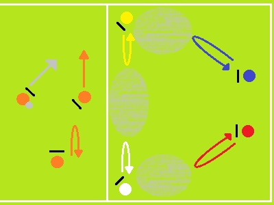
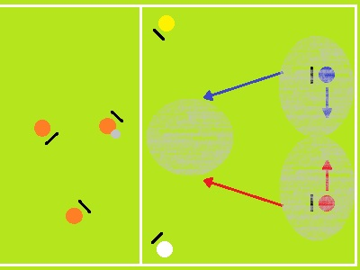

El set establece otra jugada en la zona de gol donde se ordena por colores los cortes potenciales.
Los handlers siguen teniendo la tarea de acercar el disco a la zona de gol para crear oportunidades.
Los cortadores amarillo y azul, así como rojo y blanco trabajan en parejas cuando el disco llega a las bandas y complementan sus cortes abriendo las zonas resaltadas con gris para marcar.
La segunda posibilidad se da cuando el disco llega al centro y los cortadores azul y rojo complementan sus cortes para abrir los nuevos espacios grises y marcar.
